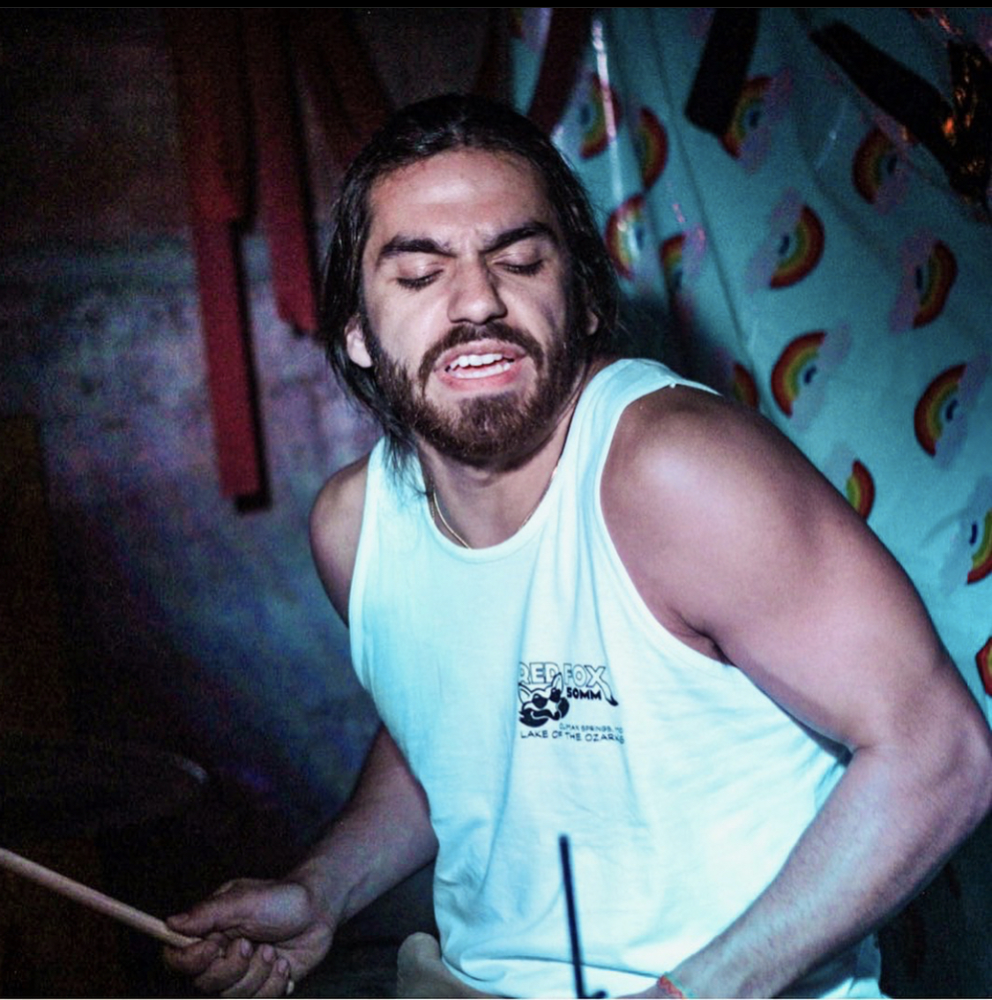

Professional life
My professional career has been centered around food. I've been in the hospitality business for 10 plus years and it's given me tons of great work expeirences and life lessons. I used to work in the kitchen or what is referred to as the back of house in restraunt jargin, and it was actually my introduction into the business. i learned to cook several different types of food. I learned BBQ, traditional American food, Itlian, and spanish style tapas. As made a transition to the "front of house" I learned about drinks. Everything from classic cocktails to things like how to infuse vodkas, make shrubs, and syrups. I'v learned tons of lessons that don't have to do with food sevice as much as they were just life lessons in general. Lessons on how to communicate whether that be with a guest or with my collegues or bosses. I've learned about managing expectations. Being up front and honest about a potential problem. In my time in the service industry I've had the pleasure of being promoted into mnagament. A task that proved difficult but all the while rewarding.
Below is a list of places I've had the pleasure of serving drinks, delicious plates, and cooking food
"We are the music makers, and we are the dreamers of dreams" - Willy Wonka
I've been playing drums for 15 years, and I've been playing drums live for a little over 10 years. Music is one of the things I'm most passionate about. Its' led me to cities, venues, and people I never thought I'd get to meet. I currently play in two bands Mild Cats and Momma's Boy Being creative in the sense of making music and has helped me grow and keep an open mind to perspectives and lifestyles. I am etirnely greatful for music.
Here's some live footage
Here's Momma's Boy Spotify
Here's Mild Cat's Spotify
Estes Park, Colorado

We have family that lives in Fort Collins, CO, so my girlfreind and I take a trip out about twice a year. We enjoy spending time with family, but the bonus is always getting to got to the moutains to hike. Growing up in Kansas City there isn't natural beauty around like there is in Colorado. I've always considered my self an inner-city person. Someone who loves city scapes and the hustle and movement of a city, until I got to go on my first hike. It sounds small and trivial but it truly changed the way I felt about the outdoors. I've always loved nature and found my self in awe from photos, but being there in the moutains breathing the fresh air in, is truly something completely different than any photo. This last trip we went to The Devils Back Bone. Back Bone is a series of unique rock formation reaching several miles. The formation is jagged and looks much like a giants back bone hence the name. We also got to see Arthurs Rock. This was an extremely peaceful trail that went up in elevation. It made for a tough track with our little one but the view was completely worth it.